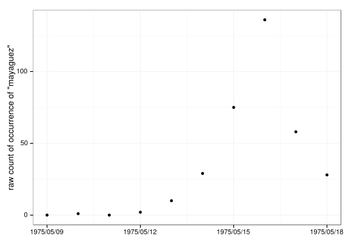
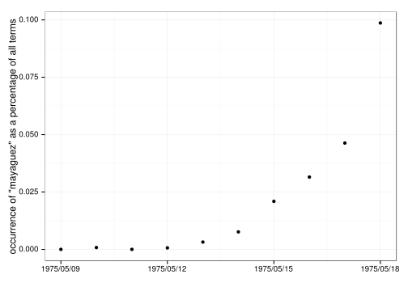
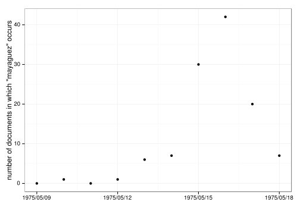
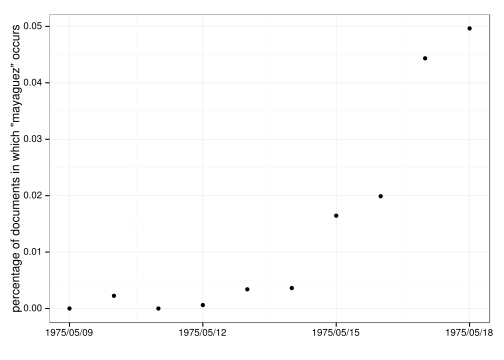
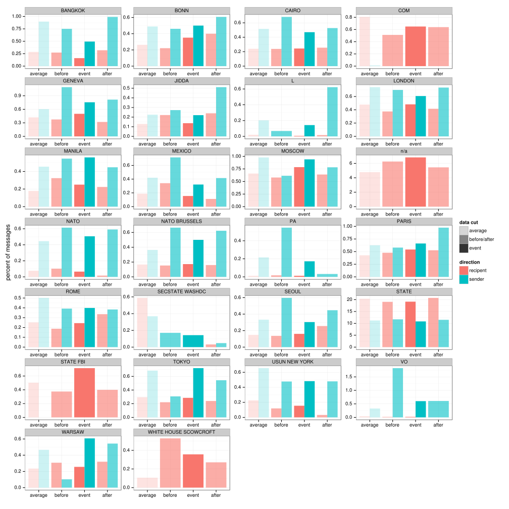
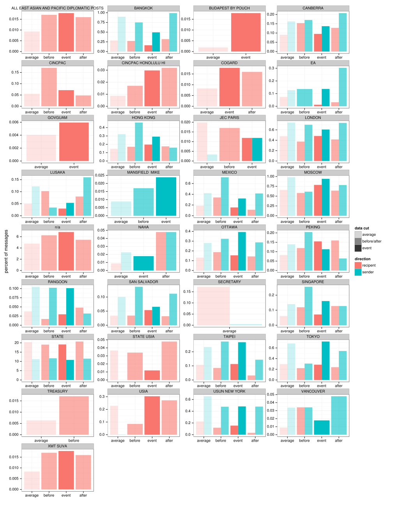
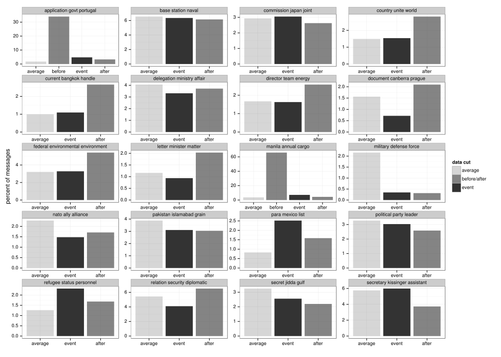
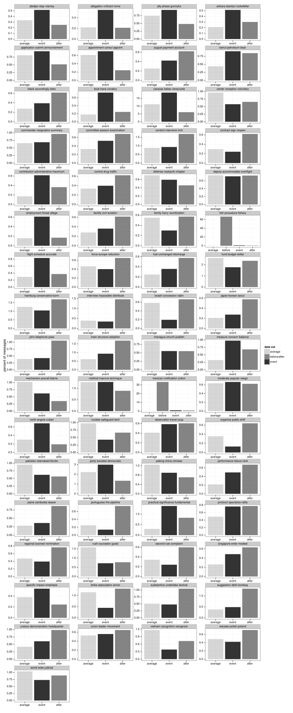
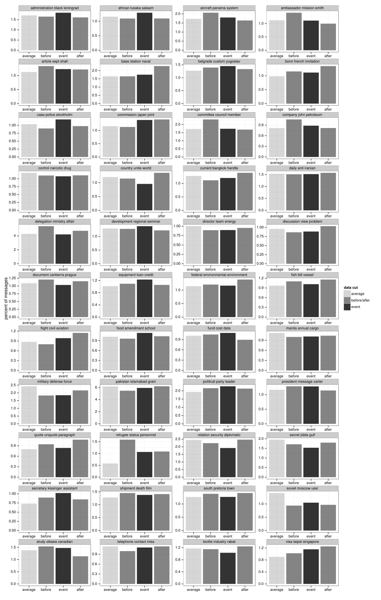
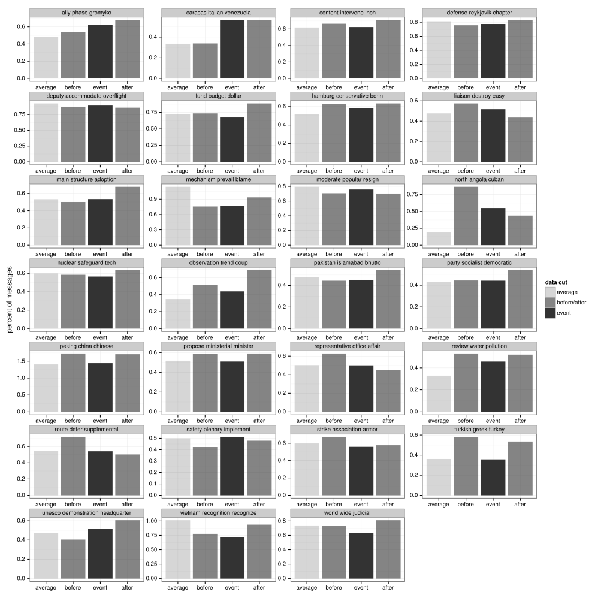

Mayaguez Incident
On May 12, 1975, the SS Mayaguez, an American merchant ship, was captured by Khmer Rouge forces. It was recaptured May 15, 1975.
We first consider the occurrences of the word "Mayaguez" as both raw counts (left) and percentages (right). We present overall term count (top) and the count of documents containing the term (bottom). The distributions we see establish that there is some signal for this event in the data.
   {kind=link}
{kind=link}
{kind=link}
{kind=link}
Next, we consider the entities sending and receiving cables, reporting entities as a percentage of all messages sent. We compare the span of time surrounding the event against spans of equal length immediately before and after the event; we also compare to the average of the whole corpus, including the event itself.
First, we examine top entities in the subset of documents containing the word "Mayaguez".

Second, we examine top entities in whole corpus during the event.
{kind=link}
Finally, we use the top entities in the subset of documents containing the word "Mayaguez" and examine their behavior on all messages--not just the subset of documents containing the word of interest.
{kind=link}
Now we consider how LDA topics relate to the event. We fit LDA with K=100 and K=500. We weigh all documents equally, regardless of length.
First, we examine top topics in the subset of documents containing the word "Mayaguez" for K=100.
{kind=link}
Similarly, we examine top topics in the subset of documents containing the word "Mayaguez" for K=500.
{kind=link}
To get a broader picture, we examine top topics in all documents for K=100.
{kind=link}
Similarly, we examine top topics in all documents for K=500.
{kind=link}